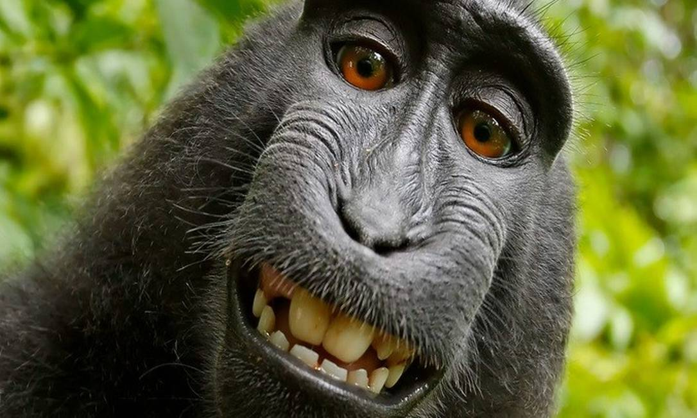
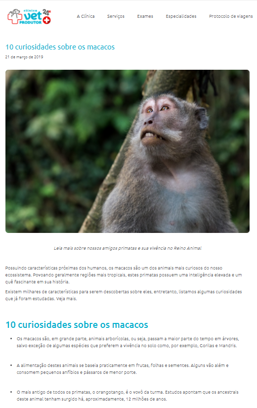

Curiosidade sobre macacos
Curiosidade sobre macacos
Ir para o site
Como muitos sabem macacos são animais muito inteligentes, possuindo características próximas dos humanos, os macacos são um dos animais mais curiosos do nosso ecossistema. Povoando geralmente regiões mais tropicais, estes primatas possuem uma inteligência elevada, os macacos são um dos animais mais curiosos do nosso ecossistema.

Video Sobre o assunto
Voltar ao topo